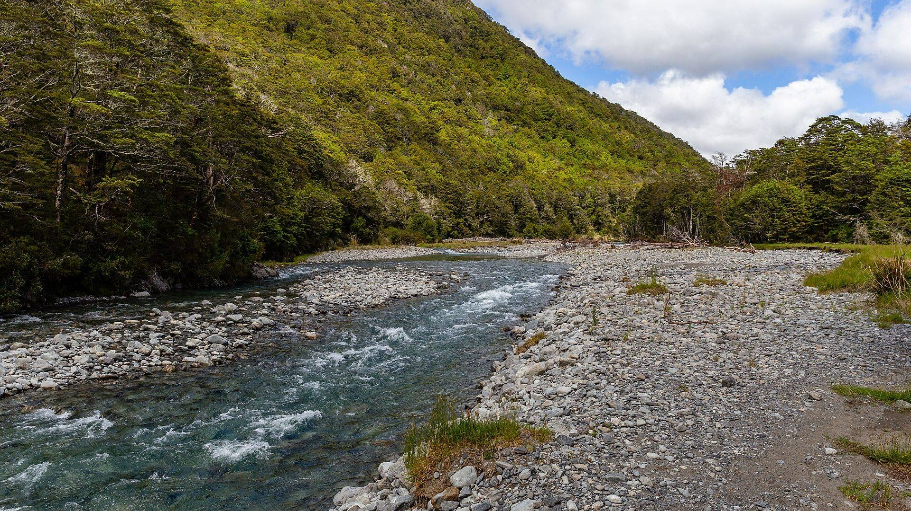

From the West Coast
Westport ~1 hr 20Follow State Highway 6 up the Buller Gorge, one of the great South Island drives, with the river below you most of the way and old gold-rush sites along the route.

Top of the South Island, on the Buller River. Easy to reach from Nelson, the West Coast and over the Lewis Pass.
Where we are
Murchison is a small rural town at the meeting of the Buller and Matakitaki rivers, in the Tasman district at the top of the South Island. It sits right on the main road between Nelson and the West Coast, which makes it a natural stop on any South Island road trip.
Ian will give you directions to his place when you book. The town has the basics covered, with cafés, a pub, a general store and fuel.
| From | Drive |
|---|---|
| WestportThrough the Buller Gorge | ~1 hr 20 |
| NelsonOver the Hope Saddle | ~1 hr 45 |
| Hanmer SpringsOver the Lewis Pass | ~2 hr 15 |
| Blenheim / PictonVia St Arnaud and the Wairau Valley (Picton is a little longer) | ~2 hr 30 |
| ChristchurchOver the Lewis Pass | ~4 hr |
On the road
Every way into Murchison is a scenic drive. Allow extra time for photo stops.

Follow State Highway 6 up the Buller Gorge, one of the great South Island drives, with the river below you most of the way and old gold-rush sites along the route.
Head south on State Highway 6 through rolling farmland and forest, over the Hope Saddle and down into the Buller valley.
Cross the Southern Alps over the Lewis Pass, through beech forest and alpine valleys, then turn north past Maruia Falls towards Murchison.
Drive up the Wairau Valley past the vineyards to St Arnaud and Nelson Lakes, then on to Murchison. A handy route straight off the Cook Strait ferry.
Find us on the map
Make a trip of it
Murchison is known for its rivers and the outdoors. Add a day or two either side of your gold panning.
Dramatic river scenery, a famous swingbridge and plenty of places to stop and stretch your legs between Murchison and the coast.
The rivers around Murchison are well known for whitewater, from gentle family floats to proper rapids with local operators.
Alpine lakes, beech forest and walking tracks for every fitness level around St Arnaud and Lake Rotoiti.
Once a busy gold-mining town in the Buller Gorge, now a peaceful spot with walks among the old relics.
A wide waterfall that formed in the 1929 Murchison earthquake, an easy roadside stop on the way to or from the Lewis Pass.
A friendly small town with cafés, a pub and a local museum that tells the story of the district, including the 1929 earthquake.
Call Ian Lawson
Murchison is an easy stop between Nelson, the West Coast and Canterbury. Call Ian to fit a gold panning stay into your trip.